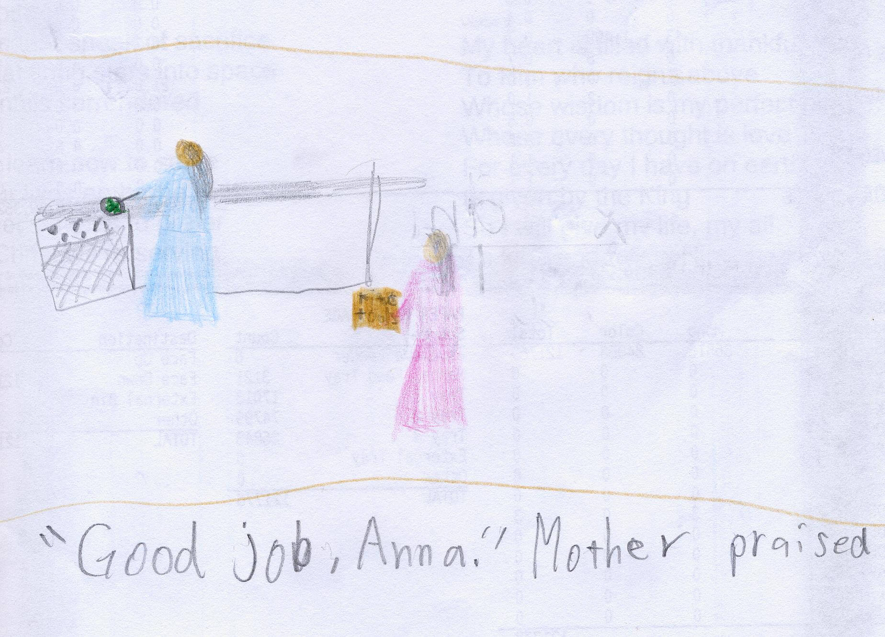
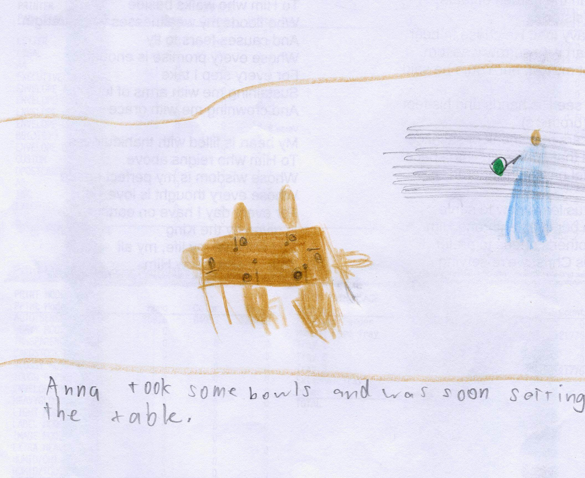
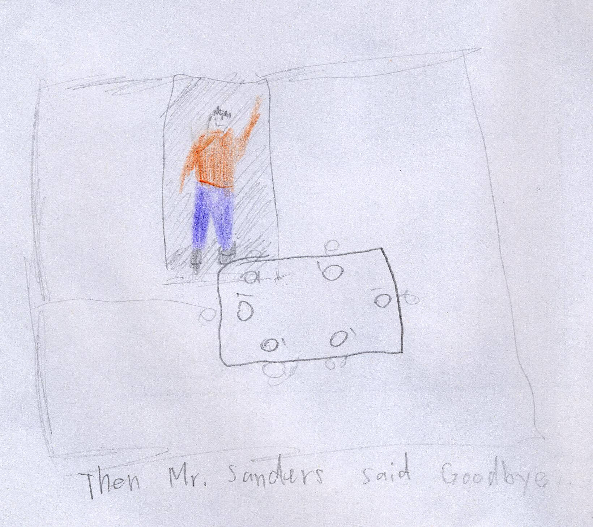
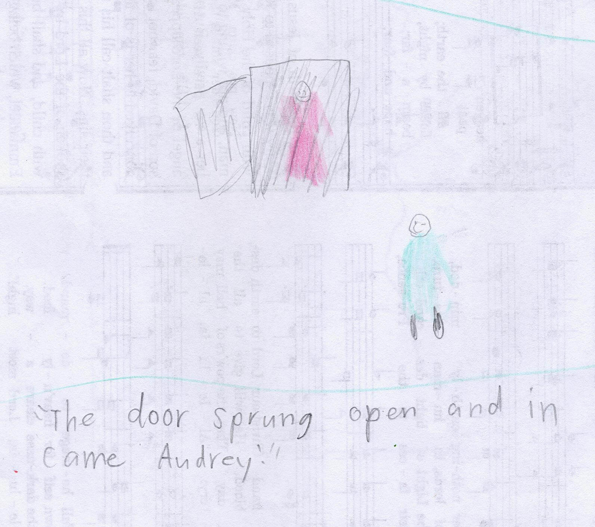

The Martin Family: Ben 💖 Doris, Andy (17), Andrew (14), Audrey (10), Anna (8)
Anna skipped happily to the house. She and her family had just moved to Ohio, and now they were bringing in their belongings. "Father, may I bring in a box?" asked Anna. "Yes, you may bring in this one." Father answered. Anna carefully took the box Father offered, then she went into the house and called "Mother, where are you? I got a box that says "kitchen tools."
Anna walked around the new home. Father had built a beautiful log cabin in the woods and had told her that maybe he could help her build a tree house. Since Anna's two brothers and one sister were busy getting the animals ready, Anna had to help her Mother a lot. Finally, she found Mother in the kitchen getting ready supper. "Don't you think your siblings will be hungry?" Mother asked, vigorously stirring a big pot of stew. "Oh, yes!" Anna agreed. "I'm already hungry!" "Alright now, go, and get a box but don't drop it!" Mother said, cutting up some potatoes.
Anna quickly ran out the doors and out to Father who was taking out soe boxes. "MAy I have a box? Mother told me to get one." She panted "Alright, here is a kitchen one." Father said, handing her a cardboard box.
Anna carefully took the box and walked the house calling "Mother, here is a box." "Good job Anna." Mother praised, "Now you can help me set the table."
Anna took some bowls and was soon setting the table. The whole family was soon seated eating dinner. "Thank you for the delicous supper!" Father said, getting up from his chair. "I think we should start moving again."
Anna's siblings soon were starting to the barn again. "Mother, where is the vacuum?" Anna asked, looking around the empty house. "Go to Father and ask him where it is," Mother suggested, cheerfully whisking away the dishes. "Alright, I'll go out to Father," she said, going out the door.
That night, as Anna lay in the makeshift bed Father had made, she thought about how kind her siblings were and how sad she would be without her siblings. Then, she fell into sweet sleep.
The next morning, as the family was eating breakfast, there was a knock, knock, knock. Father got up from his chair and opened the door to see someone he did not recognize.
"Hello, I noticed you were moving, and I wanted to welcome you," said the man. "Thank you," Father answered. The man said, "Well, my name is Robert Sanders, what is yours?" "I'm Ben Martin, and I just moved here with my family from Kentucky, answered Father. Then Mr. Sanders said, good bye and the family was left alone.
"Well, that was interesting," Andy commented. "Yes, it was," Anna agreed, scraping the last of the oatmeal from her bowl.
That afternoon, Mother said that she could help a little bit in the barn. As Anna pulled on her boots, the door sprung open and in came Audrey! Are you going to help us?" Audrey questioned, walking to the kitchen. "Yes, Mother said I could help you a little bit," Anna answered, opening the door towards the barn.
Soon, Andy, Andrew, Audrey, and Anna were busily humming as they got ready the barn. As Anna tiredly scooped another pitchforkful of hay, she wished Grandpa's would soon come.
Suddenly, Andy brought her back to her senses, "Anna, time to go in!" "Alright," Anna answered.